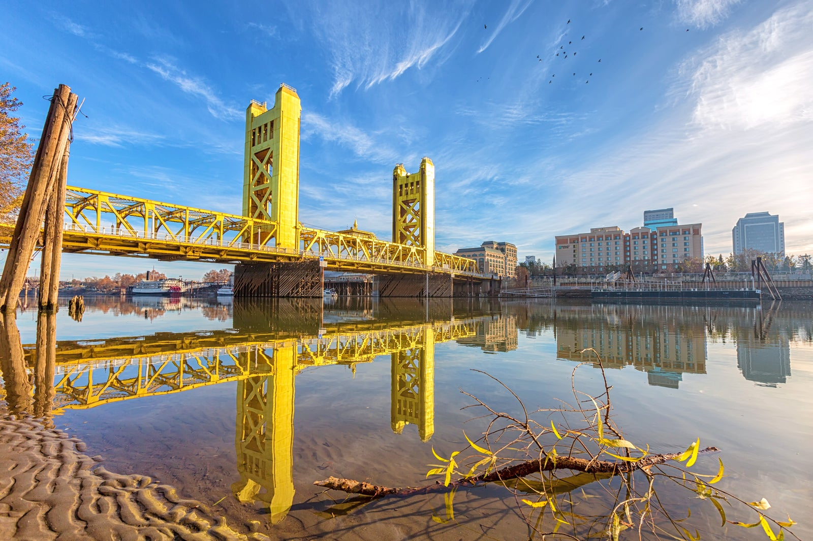
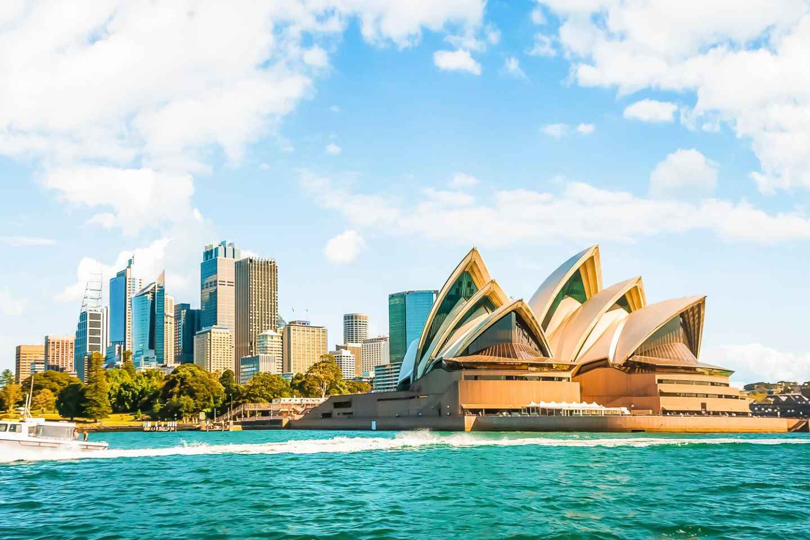
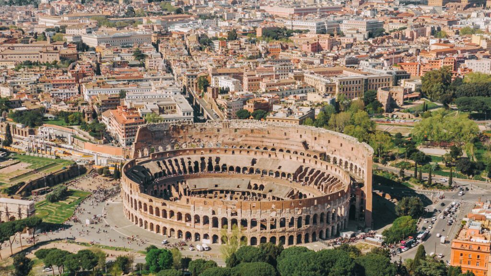

My Top 5's by Denny Ching
Top Five Favorite Cities
-
San Francisco

San Francisco is my favorite city because of its unique blend of natural beauty,
vibrant culture, and iconic landmarks. The city's stunning location along the coast,
with the Golden Gate Bridge spanning across the bay and the rolling hills creating a
picturesque backdrop, is truly captivating.
-
Sacramento

Sacramento is my second favorite city because it offers a perfect blend of small-town charm
and urban amenities. Its welcoming community, slower pace of life, and proximity to natural
beauty make it an ideal place to stay. The city's rich history, with its role in the California Gold Rush
and its historic downtown, adds a sense of nostalgia and character.
-
Toronto

Toronto is my third favorite city because it embodies a diverse and dynamic urban experience.
Its multicultural atmosphere fosters a sense of inclusivity and acceptance that resonates with me.
The city's iconic skyline, featuring the CN Tower, showcases modernity and innovation.
-
New York

New York is my fourth favorite city because it pulsates with an electrifying energy and an unparalleled
diversity that captivates me. The iconic skyline, dominated by landmarks like the Empire State Building
and Times Square, evokes a sense of grandeur and ambition. The city's cultural scene, encompassing Broadway shows,
museums, and art galleries, feeds my appetite for creativity and expression.
-
Las Vegas

Las Vegas is my fifth favorite city because it offers an electrifying and one-of-a-kind entertainment experience.
The iconic Las Vegas Strip, with its dazzling lights, world-renowned casinos, and extravagant resorts, embodies a
sense of excitement and luxury that resonates with me. The city's vibrant nightlife, featuring famous shows, concerts,
and performances, satisfies my craving for entertainment and spectacle.
Top Five Cities On My Travel Bucket List
-
Tokyo

Tokyo is on my bucket list because it represents a captivating blend of ancient traditions
and cutting-edge innovation.
-
Paris

Paris is on my bucket list because it represents a timeless and romantic cityscape that has
captured the imagination of people around the world.
-
Sydney

Sydney is on my bucket list because it promises a captivating blend of natural beauty,
urban vibrancy, and a relaxed coastal lifestyle.
-
Hong Kong

Hong Kong is on my bucket list because it promises a fascinating blend of East-meets-West culture,
a dynamic urban landscape, and a rich history.
-
Rome

Rome is on my bucket list because it embodies a timeless journey through history, art, and culture
that I'm eager to experience.
Top Five Cookie Recipes
Cookies are my favorite dessert because of their delightful combination of sweetness and texture.
-

-

-
-

-